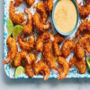

Fried Coconut Shrimp

What's the deal?
This shrimp recipe makes the perfect midweek meal or quick appetizer because the ingredients are simple and there’s minimal cook time.
Ingredients:
- 1/3 cup all-purpose flour or whole wheat flour
- 1/2 teaspoon salt
- 1/2 teaspoon ground black pepper
- 2 large eggs, beaten
- 3/4 cup Panko bread crumbs
- 1 cup sweetened shredded coconut
- 1 pound raw large shrimp, peeled and deveined with tails attached
- 3–4 Tablespoons vegetable oil or coconut oil
- 1 Tablespoon finely chopped cilantro
How to make:
- Start with 3 medium bowls. Combine flour, salt, and pepper in one. Beat the eggs in the second bowl. Combine Panko and coconut in the third bowl.
- Dip the shrimp into the flour, then the eggs, and then dredge the shrimp into the coconut mixture, pressing gently to adhere. You want a lot of coconut on each shrimp. Set the coated shrimp aside on a plate as you coat the remaining shrimp.
- Add enough oil to cover the bottom of a large skillet over medium heat. Fry the coconut shrimp in batches such as 7-8 shrimp at a time– do not crowd them in the pan. Flip after 2 minutes and fry the other side for 2 minutes or until golden brown. We prefer ours a little darker, so I fry each side for about 2:30-3 minutes.
- Place the finished coconut shrimp on a plate lined with a paper towel as you fry the rest. Sprinkle with finely chopped cilantro. Mix dipping sauce ingredients together and serve with shrimp.